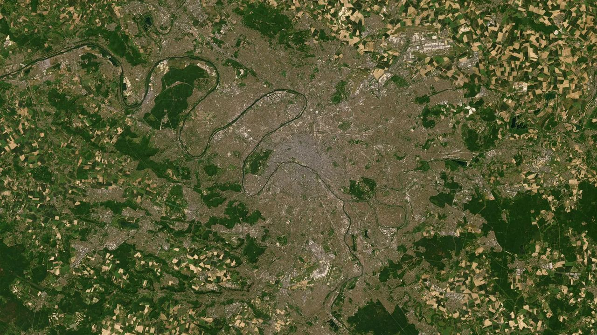
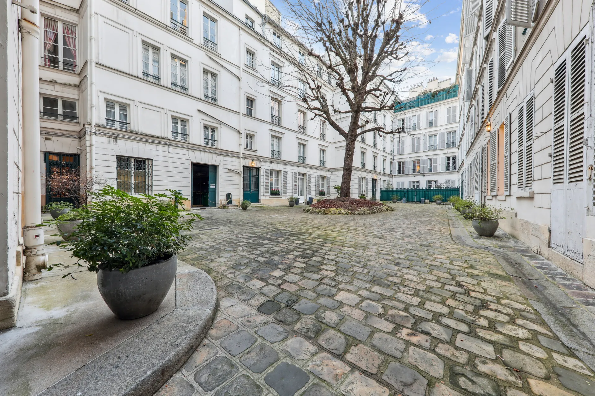
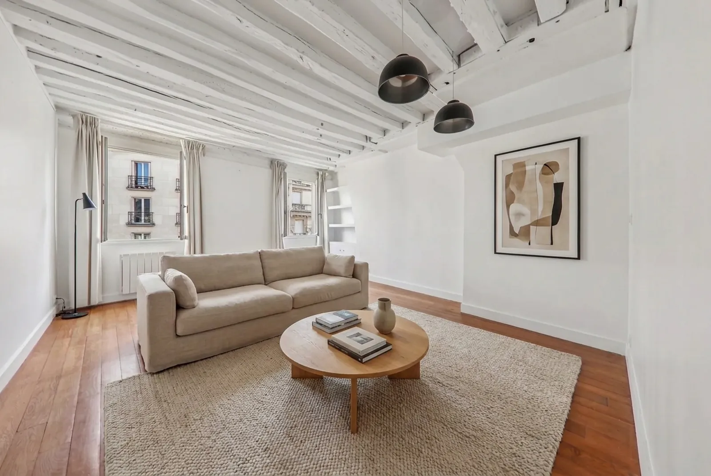
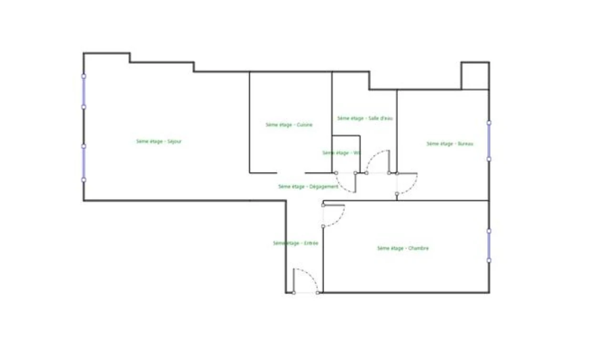
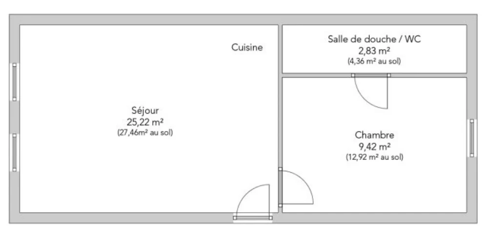
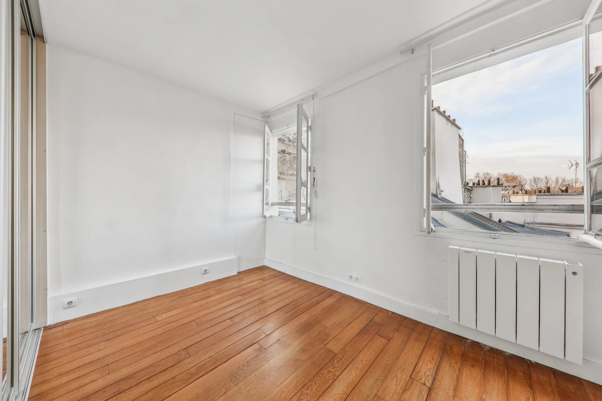

État actuel
Cinq pièces sur deux niveaux : séjour, cuisine séparée, deux chambres et un bureau, deux salles d'eau. Les plans mesurés du certificat structurent chacun des projets qui suivent.
109,29 m² au sol, 101,52 m² loi Carrez

Paris VII · Saint-Thomas d'Aquin
Un duplex traversant de 109 m² aux deux derniers étages, face au musée d'Orsay.

Aménagement virtuel · projection IA
Dans la prestigieuse rue du Bac, au cœur du quartier Saint-Thomas d'Aquin, cet élégant duplex occupe les 5ᵉ et 6ᵉ étages d'un immeuble ancien de 1830 en pierre de taille, sécurisé, avec ascenseur et gardien.
Traversant et très lumineux, il bénéficie de vues dégagées sur le musée d'Orsay et les toits de Paris. Ses 5 pièces, dont 3 chambres, une cuisine et 2 salles d'eau, se déploient sur deux niveaux.
L'ensemble est à rénover et offre un véritable potentiel d'aménagement sur mesure, dans un environnement privilégié, à proximité immédiate des transports, des écoles et des jardins. Une opportunité rare dans un secteur particulièrement recherché.
À deux pas
Photographies du bien animées par IA. Aménagements virtuels non contractuels.

Une cour pavée plantée, des façades de 1830 en pierre de taille, un gardien et un ascenseur. L'immeuble, de standing, compte 6 étages et s'ouvre sur la rue du Bac par un porche sécurisé : digicode, interphone et Vigik.
Chaque photographie s'ouvre en plein écran.
Le même séjour, aujourd'hui puis projeté. Faites glisser pour comparer.

Aménagement virtuel généré par IA, indicatif et non contractuel.
L'appartement projeté, aux deux niveaux : le potentiel d'un aménagement sur mesure. Cliquez pour parcourir chaque pièce dans la visite.
La division possible du duplex en quatre studios indépendants, deux par niveau. Aménagement projeté, non contractuel.
Chaque scénario se parcourt pièce par pièce dans la visite virtuelle, plans des deux niveaux à l'appui.
Scénarios d'étude non contractuels, à faire valider par un architecte, le règlement de copropriété et les autorisations d'urbanisme.
Quatre lectures du même volume. Les plans s'annotent à mesure que vous descendez.
Cinq pièces sur deux niveaux : séjour, cuisine séparée, deux chambres et un bureau, deux salles d'eau. Les plans mesurés du certificat structurent chacun des projets qui suivent.
109,29 m² au sol, 101,52 m² loi Carrez
La cloison de la cuisine s'efface, le mobilier prend place : grande pièce de vie traversante au 5ᵉ, salon-bibliothèque et chambre d'amis sous les toits. Une trémie peut relier les deux niveaux en interne, sous réserve d'étude de structure.
Aménagement projeté, sous réserve d'études techniques
Deux studios par niveau, organisés autour des cuisines et salles d'eau existantes. De l'ordre de 32 m² Carrez chacun au 5ᵉ, 18 m² au 6ᵉ.
Division soumise à la copropriété et aux autorisations
Un trois pièces complet au 5ᵉ. Au 6ᵉ, un studio locatif déjà équipé d'une cuisine et d'une salle de douche, sous réserve d'un accès indépendant.
Environ 64 m² Carrez au 5ᵉ, 37 m² au 6ᵉ
Niveau 5

Niveau 6

Schémas d'étude non contractuels.
La fiche technique complète du bien.
2 000 000 €
Soit 18 300 €/m² au sol

La rue du Bac relie le carré Saint-Germain-des-Prés à la Seine, entre antiquaires, galeries et maisons historiques. Une adresse de centre-ville, au calme sur cour, où tout se fait à pied.
Le musée d'Orsay, visible depuis l'appartement, la Seine et les quais, les galeries de Saint-Germain-des-Prés. Au 46 de la rue, la maison Deyrolle, institution parisienne depuis 1831.
Rue commerçante et marchés de bouche du quartier, Le Bon Marché Rive Gauche et La Grande Épicerie de Paris à quelques rues. Rues piétonnes à proximité.
Métro Rue du Bac, ligne 12, et lignes de bus au pied de l'immeuble. La gare du musée d'Orsay, RER C, de l'autre côté du pont Royal, relie l'ouest parisien.
Écoles du quartier, jardins et squares à proximité immédiate. Un environnement recherché, à la fois central et résidentiel.
42, rue du Bac, 75007 Paris, quartier Saint-Thomas d'Aquin, entre Saint-Germain-des-Prés et la Seine. La vue aérienne descend jusqu'aux toits de l'immeuble : déplacez-vous, zoomez, explorez.
Explorer en 3DLouison Chaumeau
SAS YP
SAS YP
Yoann Chaumeau et Louison Chaumeau
Paris VII
42, rue du Bac